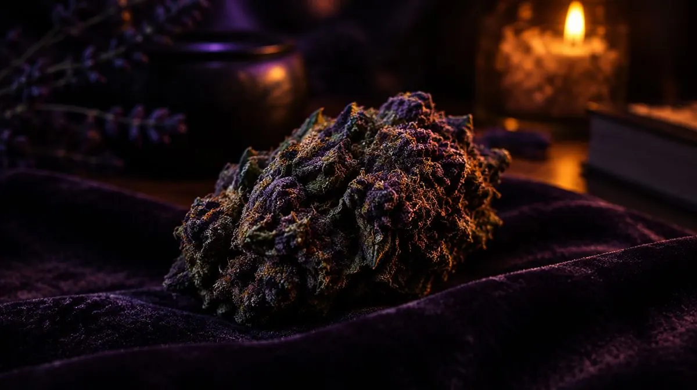
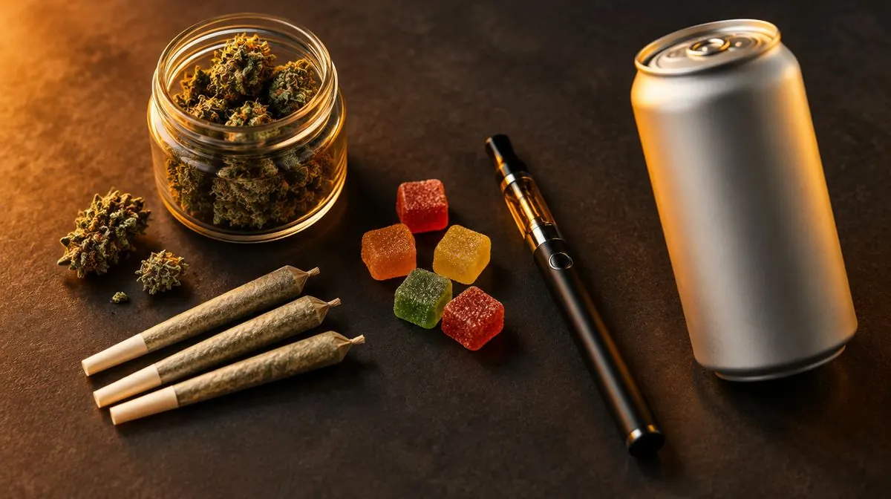
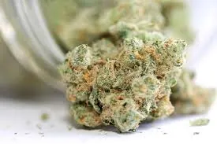

Local guides · 7 min read
Best Indica Strains in Westchester
The indica leaning flower worth buying at a Westchester counter comes from four families: the GMO and garlic funk crosses, the Burger crosses, the Cake and purple lineages, and the sweeter Do-Si-Dos and Zkittlez side. Those families turn up on our shelf more reliably than any single strain, and they are what our budtenders point at when someone asks for something heavy.
We are talking about families on purpose. Specific drops sell out in days, and a page that named this week’s jars would be wrong by next month. Learn the families and you can pick well from whatever is on the shelf.
The word indica on a menu is a shelf label, not a lab result. What makes flower feel heavy is the terpene profile, and that is what to shop for.
What to know up front

- Indica, sativa, and hybrid are marketing categories on a dispensary menu. What you feel tracks the terpenes in the jar much more closely than the label on it.
- GMO crosses and Burger crosses are the heaviest leaning families on New York shelves, and both are built on a garlic and savory nose, not a sweet one.
- Myrcene, caryophyllene, and linalool are the three terpenes most often found in flower that people describe as heavy and settling.
- CBN is a cannabinoid that forms as THC ages, and it shows up in nighttime edible lines. It is not in flower in any meaningful amount.
- Adults 21 and over can buy up to 3 ounces of flower per day in New York. Toke‘s Westchester store at 471 McLean Ave in Yonkers is open 10:00 AM to 10:30 PM Sunday through Thursday and 10:00 AM to 11:00 PM Friday and Saturday, and the Rockland store at 2 S Central Ave in Spring Valley until 11:00 PM.
What does indica actually mean on a dispensary menu?

It means the shop sorted that jar into the heavy column. The original distinction between indica and sativa described plant shape and origin, and decades of crossbreeding have made it close to useless as a prediction of how something feels.
What survives is a rough correlation. Flower sold as indica usually carries a lot of myrcene, an earthy terpene also found in hops and mangoes, and most people describe myrcene forward flower as settling. Flower sold as sativa leans on limonene or terpinolene and reads brighter, and plenty of people react the opposite way. Our post on indica versus sativa versus hybrid covers where the labels came from and why budtenders still use them.
Which indica leaning families are worth buying here?

Four, and they split by smell. The savory end is GMO and Burger. The dessert end is Cake and the purples. The candy end is Do-Si-Dos, Zkittlez, and their crosses. Pick by which appeals to you, because your nose predicts better than any label. Ask what is in from each family rather than for a strain by name, and check both menus before you drive, since the Yonkers and Spring Valley shelves are not identical on a given day.
GMO and the garlic funk family

GMO is the loudest thing on our shelf. The nose is garlic, raw onion, and something chemical underneath, and it fills a room the moment you crack the lid. Smoke is thick and coats your mouth. The feel is heavy and slow.
This is a divisive family and it should be. If you like a savory, almost brothy smell, nothing else does it. If you want your flower to smell like fruit or dessert, buy from the Cake side instead.
GMO crosses also test high, which is why they turn up when someone asks for the strongest thing in the store. The nose is the better reason to buy them.
Burger crosses
Burger crosses sit next to GMO and share the garlic backbone, with more sweetness and a rounder finish. Grassroots NY, on the Spring Valley menu, is the brand our team brings up when a Burger cross comes in, and the jars are sticky enough that you need a grinder.
These are late evening flower. A half joint often does more than a full one of something lighter. If you have never had anything in the garlic family, buy the smallest size before you commit to an eighth.
Cake and purple strains

The Cake family, which includes Wedding Cake and Ice Cream Cake and their crosses, is the friendlier version of heavy. The nose is vanilla, sweet dough, and a little pepper. It settles you without the funk, and it is what we hand to someone who wants an indica but flinches at the garlic jars.
Purple lineages, built on Granddaddy Purple and Purple Punch, run grape and berry sweet. A purple looking bud is not automatically stronger. Plenty of flower turns purple from cold nights late in the season. Both families are a good starting point for someone new to indica leaning flower.
Which terpenes actually drive the heavy feel?

Three worth knowing by name.
Myrcene is the one most associated with a heavy body feel, and it is common in the GMO, Burger, and purple families. Leafly’s explainer on myrcene is a good primer. Caryophyllene is peppery and gives GMO its bite. Linalool is floral and soft and turns up in the Cake and purple crosses.
If a jar has a terpene breakdown on the package, or the budtender can pull it up, that tells you more about how it will feel than the THC number does. We made that case in what THC percentage actually means.
What should you buy for a night you want to wind down?

Cannabis does not treat insomnia and we are not going to tell you it does. What people tell us across the counter is that a heavy, myrcene forward flower late in the evening helps them settle. That conversation happens around 7 or 8 on a weeknight, after the drive back up the Saw Mill or the walk home from the Bronxville and Mount Vernon platforms.
If that is what you are after, start with a Cake or purple leaning jar rather than a GMO. The garlic strains are strong enough that people find them more of an event than a wind down.
Edibles are the other route, and timing is what people get wrong. A gummy takes 45 minutes to two hours to come on, so take it well before you want to be settled, not when you are already in bed. Many nighttime gummy lines add CBN, a cannabinoid that forms as THC ages, and Leafly has a plain explainer on what CBN is. The best gummies in Westchester covers which lines stay in stock and how to dose them. For the wider picture, read cannabis for sleep, stress, and recovery.
Who should skip indica flower?

Anyone with something to do. Heavy flower and a morning meeting do not mix, and the garlic family can flatten an afternoon. New shoppers should be careful with the high testing GMO and Burger crosses. Start small with something from the Cake side, or go to the best sativa strains in Westchester if you want to stay functional. If a heavy body feel is the thing you do not like about cannabis, this is the wrong aisle.
Frequently asked questions
What is the best indica strain in Westchester?
There is no single answer, because the menu rotates weekly. The four families that deliver a heavy feel are GMO crosses, Burger crosses, the Cake lineage, and the purples. Ask the budtender in Yonkers or Spring Valley what is in from those families and smell the jars.
Where do I buy indica flower if my town has no dispensary?
Most Westchester villages opted out of adult-use retail, so Bronxville, Scarsdale, and Eastchester shoppers drive to Yonkers or order delivery. The Bronxville and Scarsdale pages cover delivery. In Rockland, Monsey and Nanuet are a few minutes from the Spring Valley store on Route 59.
Does purple weed mean it is stronger?
No. Purple color comes from pigments that develop in cold weather late in the flowering cycle, and it has nothing to do with potency. Judge the jar by smell and by the terpene breakdown.
What is CBN and should I look for it?
CBN is a cannabinoid that forms as THC oxidizes over time. It appears in many nighttime edible lines, usually paired with THC. Flower does not contain a meaningful amount of it, so look in the gummy case rather than the flower shelf.
How much indica flower can I buy at once?
Up to 3 ounces per day for adults 21 and over with a valid government photo ID, under the rules set by the state Office of Cannabis Management. The same limit applies in store and on delivery.
Will an indica strain knock me out?
It might make you feel heavy and slow, and how much depends on your tolerance and the dose. Some people feel very little from strains that flatten other people. Start small with a new jar.
Where to find indica leaning flower in Yonkers and Spring Valley
Check the Yonkers menu or the Spring Valley menu for what is in from each family, then ask a budtender to open a few jars.
The Westchester store is at 471 McLean Ave in south Yonkers, open 10:00 AM to 10:30 PM Sunday through Thursday and 10:00 AM to 11:00 PM Friday and Saturday, 914-207-1545. Street parking. It is a few minutes from Bronxville and Mount Vernon, a straight run down Central Park Avenue from Scarsdale, and a reasonable weeknight trip from New Rochelle.
The Rockland store is at 2 S Central Ave in Spring Valley, a block off Route 59, open 10:00 AM to 11:00 PM daily, 845-406-3004, with Monsey about five minutes west and Nanuet about ten minutes east.
Both stores deliver, Westchester out of Yonkers and Rockland out of Spring Valley, with a $75 delivery minimum and an ID check at the door. Delivery is free on orders of $75 or more.
To read up on who grows what, the best flower brands in Westchester covers the producers, and the best cannabis products in Westchester covers the rest of the menu.
Keep reading
More from the blog

Best Cannabis Products in Westchester
The cannabis worth buying in Westchester right now falls into four categories: properly cured flower from small New York farms, live resin vape…

What THC Percentage Actually Means
THC percentage is simply a measurement of how much THC is in a product by weight.

Best Value Cannabis Flower in Westchester
The best value flower on a Westchester menu is smalls and 7 gram jars from growers who also sell premium eighths. Same rooms, same cure, same…
Two stores · open 7 days
Order tonight, pick it up in minutes
Order online for in-store pickup, curbside pickup, or delivery across Westchester and Rockland. Free delivery on orders of $75 or more.